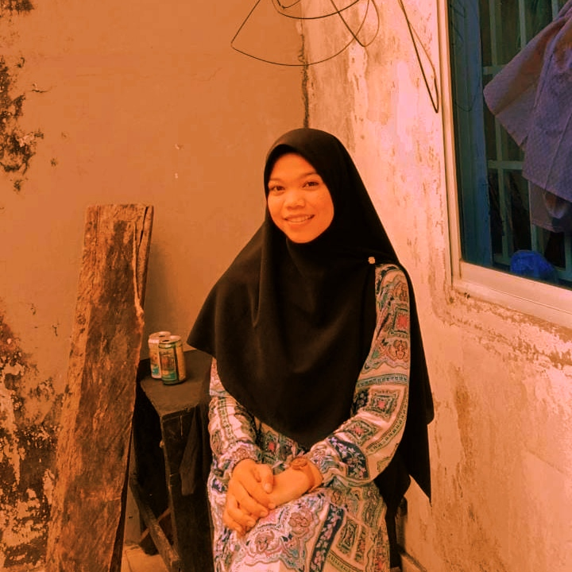

Hambatan Dunia Pendidikan di Masa Pandemi
Tahun 2020 menjadi awal dari guncangan yang tidak pernah terpikirkan sebelumnya. Masyarakat dikejutkan oleh munculnya pandemi COVID-19, mengubah cara hidup manusia secara drastis, termasuk di Indonesia.
Pembatasan aktivitas masyarakat yang diterapkan oleh pemerintah, termasuk penutupan sekolah, memberikan dampak besar terutama bagi pelajar. Terbatasnya akses terhadap pendidikan menjadi keluhan utama, baik dari masyarakat umum maupun pelajar sendiri.
Pemerintah terus menghimbau masyarakat untuk mematuhi protokol kesehatan, seperti social distancing, pembatasan perjalanan, dan isolasi mandiri bagi yang terpapar virus. Namun, pemahaman terhadap protokol ini masih kurang di beberapa daerah, seperti Pulau Kundur.
Pembelajaran daring menjadi pilihan utama untuk melanjutkan pendidikan. Baik siswa maupun guru dituntut untuk beradaptasi, meskipun banyak kendala yang dihadapi, seperti kurangnya interaksi antara siswa dan guru, serta masalah koneksi internet.
Pembelajaran daring memberikan peningkatan pengetahuan tentang teknologi digital, tetapi juga menimbulkan masalah baru, seperti karakter siswa yang kurang terbentuk karena kurangnya interaksi sosial.
Mahasiswa juga menghadapi kendala serupa, dengan biaya dan efektivitas pembelajaran daring menjadi perhatian utama. Meskipun demikian, pendidikan harus terus berlanjut, karena pandemi tidak menghentikan proses pendidikan.
Penulis: Emma Aulia Zahro